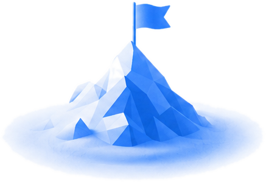
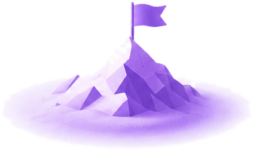

Ваш профиль разобран
Вы подошли к поступлению с сильной базой: средний балл 5.0, осознанно выбранное направление и ранний старт выгодно отличают вас от большинства абитуриентов. Сдерживает результат сейчас китайский — без HSK 5 часть грантов недоступна — и пока пустое портфолио. Это решаемо за год: ниже мы разобрали профиль по параметрам и показали, что именно стоит усилить.
Что у вас уже работает на поступление и грант — это ваша опора, на ней строим маршрут.
Что стоит подтянуть до подачи, чтобы поднять шанс на грант. По каждому пункту — что это значит сейчас и конкретная рекомендация EastSide.
Для большинства грантовых программ требуется HSK 5 или выше. От этого зависит число доступных вузов и размер гранта.
Сфокусироваться на подготовке к HSK 5 и регулярно проходить пробные экзамены — раз в 1-2 месяца.
Вузы смотрят не только на оценки, но и на активность вне учебы: проекты, олимпиады, волонтерство, исследования.
Собрать 2-3 сильных достижения до подачи документов. Это заметно усиливает заявку на грант.
Для англоязычных программ нужен IELTS около 6.0. Для китайскоязычных программ английский не критичен.
Если в планах международные программы — начать подготовку к IELTS заранее, без спешки.
Что входит в каждый вариант, сколько учебы он покрывает и как меняется шанс с подготовкой по маршруту EastSide.



Подобраны под ваше направление, язык и сроки. Нажмите на любой — откроется подробное описание всех вузов.
Запишитесь на бесплатный созвон
20 минут с куратором — разберем ваш план поступления и ответим на вопросы. Без оплаты и обязательств.
Куратор напишет в течение дня, подтвердит время и пришлет ссылку на звонок. Хотите раньше — напишите сами:
Telegram @eastside_mainМы рядом и знаем, как сделать из шансов результат. Обычно отвечаем за пару минут.